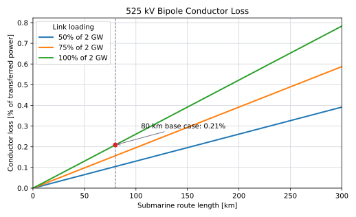

HVDC Export Cables
Role and Cost Boundary
The HVDC export-cable system carries power between the offshore and onshore converter stations. This page owns cable supply and cable electrical performance. Marine and terrestrial installation are costed separately.
| Physical scope | Treatment | Cost owner |
|---|---|---|
| Positive- and negative-pole cable supply | Included here | This page |
| Metallic-return and communication cable supply | Included here when required by the selected topology | This page |
| Cable accessories supplied with the system | Included here when included in the material benchmark | This page |
| Marine laying, burial, protection and pull-in | Excluded | Cable and Pipeline Installation |
| Underground trenching, ducts and reinstatement | Excluded | Cable and Pipeline Installation |
| Exceptional crossings, tunnels and rock placement | Excluded | Cable and Pipeline Installation |
| Converter stations | Excluded | HVDC Converter Stations |
Green = booked on this page Grey = reference only; not booked on this page
A route-kilometre measures one kilometre of corridor. A cable-kilometre measures one kilometre of one manufactured cable. Complete-system route benchmarks must not be multiplied again by the number of pole and return cables.
Reference Cable System
The TenneT 2 GW reference system uses a positive-pole cable, negative-pole cable, dedicated metallic-return cable and fibre-optic cable (TenneT 2024, 2025).
| Parameter | Reference value |
|---|---|
| HVDC topology | Bipole with dedicated metallic return |
| Pole voltage | +/-525 kV |
| Full-load pole current | 1.905 kA |
| TenneT programme route range | 150–300 km |
| Procurement conductor options | 2,300 or 2,500 mm2 Cu; 3,100 mm2 Al |
| Indicative copper resistance | 0.0072 ohm/km at 20 degrees C |
| Indicative 2,500 mm2 cable diameter | About 160 mm |
| Indicative mass | About 65 kg/m per cable |
The conductor options and programme route range come from TenneT (TenneT 2024). The resistance, diameter and mass are indicative Prysmian data (Prysmian Group, n.d.), not a selected project design.
Electrical-Loss Model
For two pole conductors of equal resistance:
\[ P_\mathrm{cable,loss} = 2I_\mathrm{pole}^{2}R'L, \]
and:
\[ \frac{P_\mathrm{cable,loss}}{P_\mathrm{dc}} = \frac{I_\mathrm{pole}R'L}{V_\mathrm{pole}}. \]
Using 0.0072 ohm/km at 20 degrees C and 1.905 kA gives:
| Route length | Conductor loss | Share of 2 GW |
|---|---|---|
| 80 km | 4.18 MW | 0.209% |
| 150 km | 7.84 MW | 0.392% |
| 250 km | 13.06 MW | 0.653% |
| 300 km | 15.67 MW | 0.784% |

The calculation excludes joints, terminations, operating-temperature effects, return-current imbalance and converter losses. Annual cable loss should be calculated from the time series:
\[ E_\mathrm{cable,loss} = \sum_t2I(t)^2R'(T_t)L\,\Delta t. \]
The current fixed 99.5% efficiency is only a legacy near-shore approximation. With the illustrative resistance, conductor loss alone reaches 0.5% at about 191 km at 20 degrees C. Distance studies should therefore use the load-dependent calculation and remove the fixed deduction.
Cable-Supply Cost
Separated Public Reference
The NREL Atlantic Offshore Wind Transmission Study gives a separated material cost for a 525 kV, 2 GW HVDC bipole and states that installation is added separately (Brinkman et al. 2024). Converted with the ECB 2025 annual-average exchange rate, the material reference is EUR 2.51 million/km, or 1.26 EUR/kW/km at 2 GW (European Central Bank 2026).
| Cable-supply element | Unit value | Status | Cost owner |
|---|---|---|---|
| 525 kV, 2 GW bipole material reference | 1.26 EUR/kW/km | NREL material cost converted with the 2025 ECB average exchange rate | This page |
| Marine/terrestrial installation | Calculated separately | Shared campaign model; no fixed EUR/km coefficient is adopted | Cable and Pipeline Installation |
This is a currency conversion, not a price-year escalation. The NREL source price basis remains to be confirmed before the value can be adopted as a constant-EUR2025 model input.
Installed-Cost Perspective
The background report’s Adriatic Link and DEA values cover installed or EPC cable systems. They are useful checks on the combined supply-plus-installation result but cannot be assigned wholly to cable material.
| Installed-system benchmark | Reference value | Interpretation | Cost owner |
|---|---|---|---|
| NREL material + installation | EUR 4.00 million/km | Historical 2 GW installed-route comparison; not an adopted installation coefficient | This page and Cable and Pipeline Installation |
| Adriatic-derived subsea rate | EUR2025 2.52 million/km | Installed-system inference from a 1 GW project | Cable and Pipeline Installation |
| DEA subsea EPC reference | EUR2025 7.90 million/km | DEA value restated to EUR2025 and evaluated at 2 GW | Cable and Pipeline Installation |
Installed-system comparisons are shown here only to give the cable-supply result a complete-route context. Installation is calculated through the physical inventory and campaign model on Cable and Pipeline Installation. Only the green material reference belongs to this page.
The Adriatic anchor is not topology-identical to the TenneT reference: Prysmian describes two submarine and two underground power cables, whereas TenneT adds a dedicated metallic return and fibre (Prysmian Group 2023). The comparison is therefore indicative rather than a matched 2 GW quotation.
Reliability and Repair
The legacy model assigns 99% cable availability. Actual energy unavailability depends on route exposure, fault frequency, repair duration and whether a fault removes one pole or the complete corridor.
ENTSO-E and Europacable report an indicative historical cable-system failure rate of about 0.07 faults per 100 km-year and average submarine repair duration of about 60 days (ENTSO-E and Europacable 2019). These historical values are not guarantees for a new 525 kV system.
| Cable state | Available transfer | Treatment |
|---|---|---|
| Both poles healthy | 2 GW | Normal operation |
| One pole unavailable, return healthy | Approximately 1 GW | Count half-capacity exposure |
| Common corridor or both poles unavailable | 0 GW | Count full-capacity exposure |
Spare cable, compatible joints, repair-vessel access, permits and trained jointing teams affect outage duration. Their costs belong to the installation/OPEX boundary; the resulting energy loss belongs to the availability model.
Current Assumptions
| Parameter | Base case | Sensitivity or next step | Evidence status |
|---|---|---|---|
| Link rating | 2 GW reference | Test multiple links | Public TenneT standard |
| Pole voltage | +/-525 kV | Fixed for reference design | Public TenneT standard |
| Cable material CAPEX | 1.26 EUR/kW/km | Confirm source price year and escalate consistently | NREL reference converted at 2025 ECB average |
| Installation CAPEX | Excluded from this page | Use linked installation model | Separate cost owner |
| Cable loss | Hourly \(I^2R(T)L\) preferred | 99.5% only for legacy compatibility | Engineering model |
| Flat cable availability | 99% | Replace with capacity states | Internal convention |
| Cable OPEX | TBD | Define inspection, spares and repair scope | Separate evidence required |
Model Limitations
| Limitation | Implication |
|---|---|
| NREL source price year is unresolved | The euro conversion is not yet a constant-EUR2025 input |
| NREL and TenneT topologies may differ | Metallic-return and accessory scope must be checked |
| Adriatic and DEA values include installation | They validate only the combined route cost |
| No matched underground material coefficient | Subsea and underground supply costs cannot yet be separated cleanly |
| One indicative copper resistance is used | Aluminium and operating-temperature alternatives are absent |
| Fixed 99.5% efficiency is retained only for compatibility | It is not valid across the full route range |